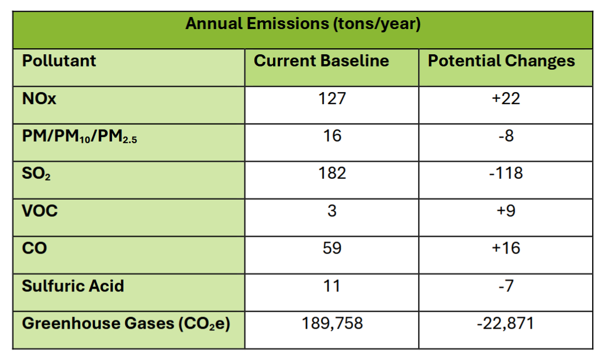
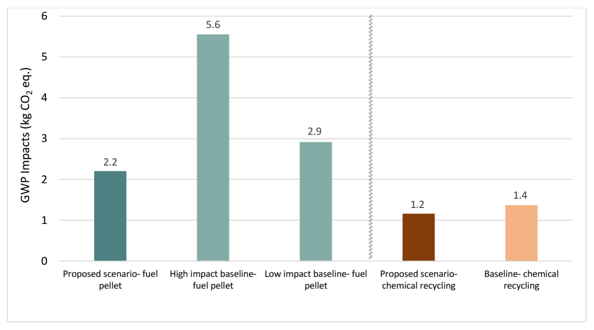

[PDF]
Stuck in the Smoke—UNC’s Coal Plant and Solutions for a Green Transition
As coauthor of this report, I researched and wrote the section on Convergen Energy engineered fuel pellets. After overwhelming public backlash, UNC is no longer pursuing fuel pellets!
Convergen Pellets
Introduction
To transition away from coal, UNC is planning to test newly engineered fuel pellets, produced by Convergen Energy, at the Cameron Avenue Cogeneration Facility (University of North Carolina at Chapel Hill, 2024b). As of July 2024, the university has applied for a modification to their Title V Air Quality Permit. UNC wants a one-year testing period to combust the fuel pellets in Boiler 6 and Boiler 7. According to the permit application, “The University expects to start the Project during the summer of 2025” (University of North Carolina at Chapel Hill, 2024a). Although ending coal use is critical and urgent, the pellets pose several concerns and are ultimately not a long-term sustainable solution to meet UNC’s energy needs.
Track record
The timeline regarding the pellets is vague; UNC has a history of pushing timelines backwards and breaking promises. In 2010, UNC promised to stop burning coal by 2020, but never followed through. Now, UNC is aiming to “be emission-neutral — but not coal-free — by the year 2040” (Pequeño, 2021). UNC also has a history of failure surrounding similar alternative fuel sources. The university tested wood pellets in 2010 and 2011 before abandoning the project (Triangle Blog Blog, 2024).
Composition
The pellets are composed of “non-recyclable feedstock materials provided by local manufacturing facilities” in the State of Michigan (University of North Carolina at Chapel Hill, 2024a). Materials include paper sludge, packaging, and corrugated containers (Wagner & Grubb, 2024). The lack of certainty regarding the many chemicals that compose the pellets is a concern when understanding and testing potential risks of burning them as fuel. According to UNC’s project proposal, the EPA considers the engineered fuel pellets Non-Hazardous Secondary Materials and not solid waste (University of North Carolina at Chapel Hill, 2024a). As the EPA and NC DEQ start classifying various PFAS (chemicals in these pellets) as hazardous air pollutants, we seriously question whether these engineered pellets should be considered Non-Hazardous. The proposal also claims the fuel pellets are “an ultra-low carbon fuel that [has] been deemed a 100% renewable fuel source in states such as Michigan” (University of North Carolina at Chapel Hill, 2024a, p. 3). As the currently stated sources of the pellets are not renewable and would have to travel a long distance to Chapel Hill, this seems to be a very misleading statement.
Benefits and drawbacks
In some ways, fuel pellets represent an improvement over burning coal. The fuel pellets have a heating value comparable to coal (University of North Carolina at Chapel Hill, 2024a), and UNC projects a decrease in certain pollutants, such as “particulate matter, fluorides and sulfuric acid mist,” including a large reduction in sulfur dioxide (Wagner & Grubb, 2024). Comparing the increase in NOx and the big decrease in SO2, this seems to be a net positive. In terms of greenhouse gases, UNC projects a moderate decrease from the equivalent of 189,758 tons of CO2e per year to 166,886 tons when switching to pellets. These changes can be seen in the table below provided by the NC DEQ.

Projections for Boilers 6 and 7 emissions completely replacing coal with engineered pellets, based on data from UNC.However, this moderate decrease in GHGs isn’t enough to contend with the climate crisis. Despite UNC’s claims that the fuel pellets are “ultra-low carbon” (University of North Carolina at Chapel Hill, 2024b), their own modeling projects suggest that switching to fuel pellets would only marginally lower emissions. Based on our calculations, the reduction in greenhouse gases would be about a 6% decrease in total university emissions (22,871/365,554=0.06; from 2024 sustainability report). Furthermore, UNC’s modeling suggests that certain key pollutants would increase when transitioning from coal to fuel pellets, projecting a rise in nitrogen oxides, carbon monoxide, and volatile organic compounds (Wagner & Grubb, 2024). The risks that these changes in pollutants pose to human health do not outweigh the benefits of decreasing GHG emissions.
The pellets also include varying PFAS, or forever chemicals (University of North Carolina at Chapel Hill, 2024a). According to UNC’s project proposal, the concentration of PFAS is “negligible” (University of North Carolina at Chapel Hill, 2024a, p. 4). The public hearing notification claims “the facility would not emit more than 1.2 pounds of PFAS per year” (Taylor, 2024). However, PFAS are harmful, even in very small quantities (The Associated Press, 2022). The EPA measures their concentration in parts per trillion, so 1.2 pounds is quite significant. Furthermore, their categorization remains contentious. For example, North Carolina recently petitioned the EPA to designate several PFAS as Hazardous Air Pollutants (Martin, 2024). In addition, North Carolina has long struggled with the consequences of PFAS, such as the contamination along the Haw River (Ross, 2019). Many citizens are rightfully concerned, as seen in the recent public hearing, about the potential adverse health effects that PFAS could cause in our community.
Other than the permit application, which is a dense legal document, UNC has provided little information available on the fuel pellets. The public’s input on alternative fuel solutions has been disregarded, despite considerable public concern regarding both the use of coal and the introduction of fuel pellets (Wagner & Grubb, 2024). Kym Meyer, a Southern Environmental Law Center senior attorney, said, “We do appreciate that the university’s trying to reduce its carbon emissions, but this just doesn’t seem like the way to do that” (Wagner & Grubb, 2024).
In spite of serious drawbacks to fuel pellets, UNC remains committed to pursuing this particular alternative to burning coal. One likely reason UNC is pursuing fuel pellets is the fact that they can be burned in the existing cogeneration plant with minor adjustments (University of North Carolina at Chapel Hill, 2024b). The lack of infrastructure upfitting likely means a low upfront cost to transition. Additionally, they claim to require burning solid fuel to produce steam. According to UNC: “To meet the campus steam demand, and to maintain the necessary high levels of reliability and resilience, Carolina needs to have multiple fuel options and be able to store fuel on site” (University of North Carolina at Chapel Hill, 2024b). This isn’t necessarily true, rather, it is an easy excuse that is used to justify delaying the inevitable transition to a zero-carbon energy source.
Recycling
Convergen Energy claims that the materials used for their pellets would otherwise end up in landfills (University of North Carolina at Chapel Hill, 2024a). With that being said, the degree to which the feedstock materials could be recycled is more complex. A Comparative Lifecycle Assessment commissioned by Convergen Energy considers chemical recycling as a proposed alternate scenario, specifically pyrolysis of plastic to PE (Zeman et al., 2021). According to the Assessment, both “proposed and baseline scenarios for the fuel pellet solution result in higher absolute impacts” (p. 35) for global warming potential than chemical recycling. Although both plastic-to-plastic and plastic-to-fuel technologies are still being developed, some research suggests that plastic-to-plastic “consistently offers GHG [greenhouse gases] emissions benefits regardless of region or functional unit” (Das et al., 2022, p. 85).

Ratio of GWP impacts in proposed vs baseline scenarios for Convergen EnergyConclusion
Based on all available evidence, Convergen Energy fuel pellets are a poor option for the University’s transition away from coal. Despite promising only a marginal reduction in global warming impact, the fuel pellets have a projected increase in several key pollutants and contain dangerous PFAS. It is crucial to invest in techniques for reducing and recycling paper and plastic industrial byproducts rather than burning them as fuel. Ultimately, UNC’s promotion of Convergen Energy fuel pellets is greenwashing and distracts from long-term solutions for clean and renewable energy.
References
The Associated Press. (2022, June 15). EPA warns that even tiny amounts of chemicals found in drinking water pose risks. NPR. https://www.npr.org/2022/06/15/1105222327/epa-drinking-water-chemicals-pfas-pfoa-pfos
Martin, S. (2024, August 29). States ask EPA to designate several PFAS as Hazardous Air Pollutants. North Carolina Department of Environmental Quality. https://www.deq.nc.gov/news/press-releases/2024/08/29/states-ask-epa-designate-several-pfas-hazardous-air-pollutants
Pequeño, S. (2021, May 12). UNC-Chapel Hill Stalls on Stopping Coal Use as the Climate Crisis Inches Closer to Catastrophe. INDY Week. https://indyweek.com/news/orange/unc-chapel-hill-cogeneration-plant-lawsuit-permit/
Ross, K. (2019, February 28). Elevated pollutants in rivers suspected in many parts of NC. Carolina Public Press. https://carolinapublicpress.org/28584/elevated-pollutants-in-rivers-suspected-in-many-parts-of-nc/
Taylor, S. (2024, December 4). (UPDATE) Public Hearing Scheduled for UNC Chapel Hill Cogeneration Facility Air Quality Permit Modification. North Carolina Department of Environmental Quality. https://www.deq.nc.gov/news/press-releases/2024/12/04/update-public-hearing-scheduled-unc-chapel-hill-cogeneration-facility-air-quality-permit
Triangle Blog Blog. (2024, August 27). UNC just filed a permit to burn an alternative to coal: here’s what we know. Triangle Blog Blog. https://triangleblogblog.com/2024/08/27/unc-just-filed-a-permit-to-burn-an-alternative-to-coal-heres-what-we-know/
University of North Carolina at Chapel Hill. (n.d.). Steam. Energy Services. Retrieved January 1, 2025, from https://energy.unc.edu/systems/steam/
University of North Carolina at Chapel Hill. (2024a, July 30). Minor NSR Permit Application. Laserfiche. https://edocs.deq.nc.gov/AirQuality/DocView.aspx?id=502820&dbid=0&repo=AirQuality&searchid=8c9c0be7-f608-4220-a693-ff304a0ae17a&cr=1
University of North Carolina at Chapel Hill. (2024b, August 14). Alternative Fuel Testing at Cogeneration Facility. Energy Services. https://energy.unc.edu/news/2024/08/14/alternative-fuel-testing-at-cogeneration-facility/
Wagner, A., & Grubb, T. (2024, September 3). In shift away from coal to power campus, UNC-Chapel Hill eyes paper-and-plastic pellets. Raleigh News & Observer. https://www.heraldsun.com/news/local/article291760490.html
Zeman, J., Xue, C., Montazeri, M., & TrueNorth Collective Sustainability Consulting. (2021, August). Comparative Life Cycle Assessment of Engineered Fuel Pellets. UNC Energy Services. Retrieved January 1, 2025, from https://energy.unc.edu/wp-content/uploads/sites/1084/2024/08/convergen-energy-life-cycle-assessment.pdf